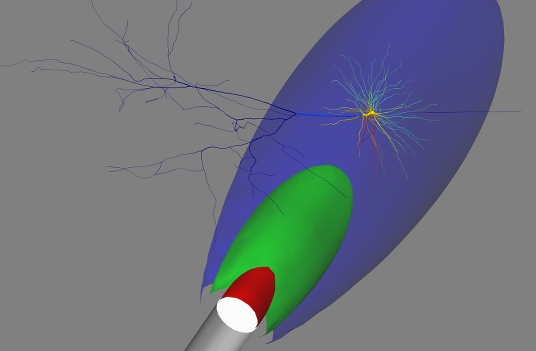

This is the readme for the model associated with the paper: Foutz TJ, Arlow RL, McIntyre CC (2012) Theoretical principles underlying optical stimulation of a channelrhodopsin-2 positive pyramidal neuron J Neurophysiol. 107(12):3235-45 For best results, open directory in ipython notebook and load "Optical Stimulation". Otherwise, refer to "Optical Stimulation.py". On an ubuntu 13.10 we can cd to the expanded zip folder and then type ipython notebook. Once the notebook starts in a browser you can select the "Optical Stimulation" notebook. If you execute all the cells you shoud see an image at the end like:  -- Tom Foutz March 15, 2014 20150518 Updates from Ted Carnevale: 1. The gbar parameters of the mechanisms specified by these files ca.mod kca.mod km.mod kv.mod na12.mod na16.mod na.mod are now the actual channel densities. This eliminates a spurious temperature dependency of the effective channel density. 2. These same files are now threadsafe, and use efun rather than vtrap0 to deal with singularities. See the mod files for more information. 20150524 Update from Ted Carnevale: Changed integration method from euler to derivimplicit which is appropriate for simple ion accumulation mechanisms. See Integration methods for SOLVE statements http://www.neuron.yale.edu/phpBB/viewtopic.php?f=28&t=592